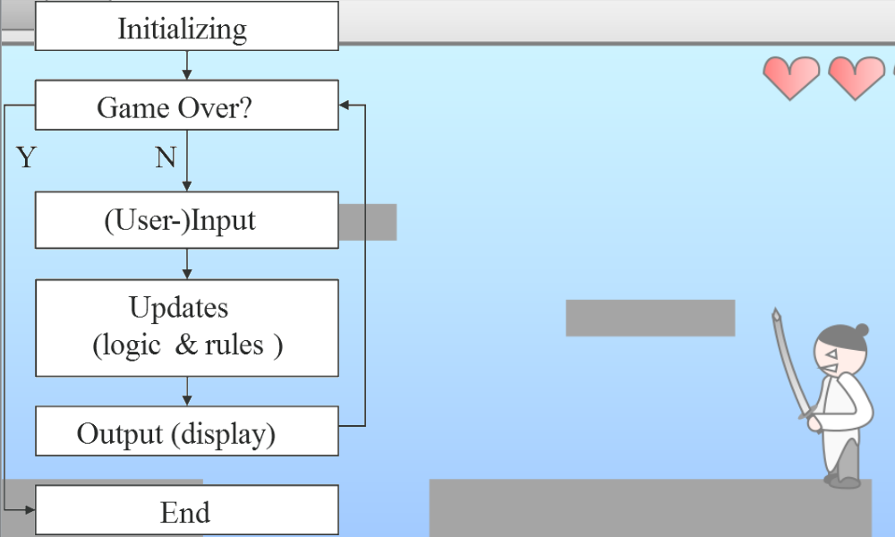
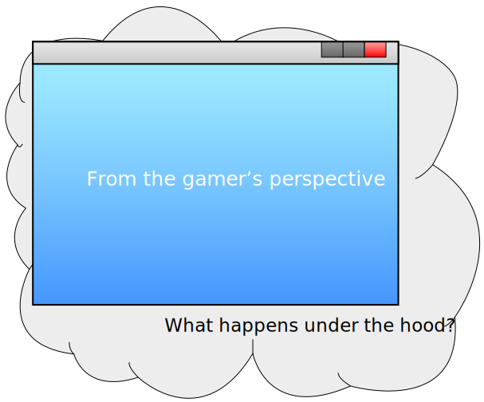
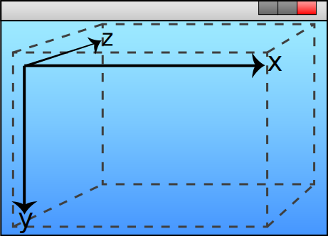
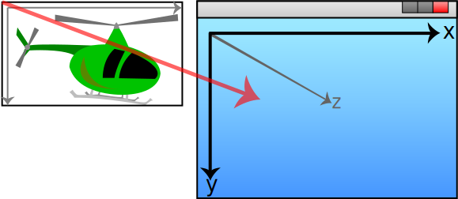

Creating game functionality
2013-10-02
Do you want to learn how to program games?
This tutorial (with exercises in part 3) aims at teaching you how, this without using any specific technology and by only using abstract terms. Technology is indeed important and which you choose to develop your game programming skills is entirely up to you. However, it wont get you far unless you know how to think in order to create your desired functionality. The entire purpose of this tutorial is to teach you the mindset of a game programmer, and how one must think in order to utilize your technology/tools to achieve your own custom functionality.
I decided to write this tutorial due to my last year experience from lecturing Game Design students in «Game prototyping and testing» using «FlashDevelop» and «ActionScript 3» as development tools. I was surprised by the outcome of the lectures as it turned out the students' primary difficulties weren't related to the technology, but to the creation of functionality. They had problems understanding how they could use the tools to create their own functionality in their prototype games. So I wrote this tutorial as a part of my job at Westerdals Oslo ACT (previously The Norwegian School of IT (NITH)), primarily as a introduction for this year's students, but I was advised to make it public as well.
NB: the tutorial uses the «SVG» format for vector graphics and it is recommended that you upgrade your web browser, or switch to a more modern browser if you are unable to see the figures/images.
Introduction
This first part is about abstract game programming, and by abstract, I mean a general understanding of core game programming concepts. Concepts that apply to any game, any technology, and any tool for game development - even the point-and-click "programming-free" tools. The goal is to provide you with the necessary knowledge in order to be able to create the functionality you want; from idea to a working solution. This requires a solid understanding of what game programming is all about, which is the first topic of this tutorial. It could be worth mentioning that it is recommended having some knowledge of object oriented programming to get the most out of this chapter, but I think everyone interested will gain good knowledge.
It's all about moving pixels
Before we move on, do some individual reflection on the two following questions:
- What is a computer game (gamer's perspective)?
- What happens under the hood of a computer game (technical perspective)?

There's no true correct answer to the first question, as it is primarily a matter of perception. Some might say "an audio-visual experience", while others might go more technical and state "an interactive user input based application, made for the purpose of entertainment". Frankly, it doesn't really matter, it was primarily a preparation and a contrast to the second question. I figure most people bothering to read this tutorial clearly have a common opinion on what a game actually is.
The second question might also give a vast variety of answers, but they'll all probably narrow down to the same key concepts;
- You need to somehow interact with the user.
- You need to give some user feedback medium (visual/audio). Computer games; usually drawing to a screen.
- The interaction should affect the feedback. These three concepts probably define the core of any game, thus being abstract.
- You need to define some game rules that maps user input to the feedback medium. The rules are actually what makes your game an actual game, and hopefully also different from other games.
These concepts probably define the very core of every game that exists, thus being abstract principles at a very high level. High level means that it's more of an overview, rather than being useful for game creation. The opposite is low level being at implementation details of games within various technologies. The provided concepts are actually at a so high level that we can delve deeper within each concept and still remain abstract, at least within computer games. The concepts provide a need for the following abstract components:
- A feedback medium, in our case a screen/window/context. Somewhere to draw graphics.
- An input/output interface; usually an Application Programming Interface (API) which is a technology allowing us to easily retrieve or submit data between the user. This primarily for user input. The API might also provide us with the feedback medium.
- Constant computational power to consistently connect the feedback medium with the user and to run the game rules.
As you might have seen, no matter how these components work together, it's all about moving pixels on a screen.
The Context
A.k.a. Screen, Stage, Window/World (Space)
"A beloved child has many names" is a famous Norwegian expression, or at least Scandinavian, and the Context is no exception. OpenGL, DirectX, and the HTML5-Canvas-object calls it «Context», Adobe Flash calls it «Stage», a typical Windows user would probably call it «Window», and I am sure that it goes by many other names as well. I've chosen to call it «Context» as it seems to be the most professional term. The first thing you should know is that the Context is not necessarily the graphical representation of a drawable area itself, but programmatically the interface, often an object in object oriented languages, that provides you functionality to draw to it. The last sentence was quite technical, so don't be afraid if you didn't get it at once - we are still at the abstract level. It could however be wise to get back to it in a later stage of your game programming journey, in case you still doubt its definition.
Common for the Context no matter what technology, is the Cartesian coordinate system and the possibility to draw on it. Most platforms these days support both two dimensional (2D) and three dimensional (3D) Contexts. For those of you that think 2D and 3D can't be compared; you are very wrong! The key difference is that 2D provides the X & the Y axis, while 3D provides the additional Z axis. The bigger difference is that the 3D based technologies often provides much more flexible and advanced APIs, but the programmatically concepts still remain the same. I have therefore chosen to focus on 2D in this tutorial and online book. It is also easier for beginners.
If you are unsure of what a coordinate system is and eventually how it works, I recommend reading Wikipedia's article before moving on. You won't necessarily have to read it all, but make sure you understand the key concepts.
The coordinate system

So what does a coordinate system provide? Positioning! As we've already discussed, you want to draw something and the Context gives you a place to draw with a specified height and width. You can imagine it as a quite standard A4 paper, with the specified size of 21.0x29.7cm. Flip it over in "landscape mode" (laying; width is greatest) to be more representative for an actual screen. Now, you want to draw a 5cm line from the center of the paper against the right, so what do you have to do?
- Calculate the coordinates (in cm) of the center of the paper (x, y)
- Place your pencil at the calculated coordinate
- Calculate the coordinates of the endpoint; 5cm to the right.
- Move the pencil while touching the paper until you reach the endpoint.
Excellent, now let's make it more like a game and specify the A4 paper's coordinate system. Firstly it's only 2D, secondly we need to specify the origin and the axis directions. Some technologies do this for you, while others like OpenGL allows you to do this on your own. We'll borrow Adobe Flash's coordinate system. The origin, the point where x & y both are 0, is defined at the very top-left corner of our A4 sheet. The X axis defines the horizontal direction and increases against the right. The Y axis defines the vertical direction and increases against the bottom of the sheet, which is typically the opposite of the traditional coordinate system used in high school mathematics. Note that you are not able to draw at the X coordinate 29.7cm, nor the Y coordinate 21cm. These two coordinates marks the very end at the paper and you will in that case draw outside of the paper.
With our coordinate system defined, we can now draw the line. Use the width and the height of the paper (Context) to calculate the center by dividing both on two. Result; x = 14.85, y = 10.5. Find this coordinate on the sheet and mark/place your pencil there, a ruler could be of excellent use. Calculate the endpoint coordinate, x + 5cm. Result; x = 19.85, y = 10.5. Good, now draw your line from the center to that coordinate. You might notice that your line doesn't get centered at the paper, but it starts at the center. So how do you actually center it? Easy! Divide the width of the line on two (5cm / 2cm = 2.5cm) and subtract it from the X coordinate of both the start- and endpoint.
Now, you can draw three more lines to create a rectangle and you will end up with your very first shape. This is as you probably have noticed, a quite complex procedure, but still helps you understand the key concepts of using the Context coordinate system. Luckily, most technologies give you pre-made functions for this. The following example is ActionScript 3 (Flash), and gives you the same result, but is working with pixels (px) instead of cm. Remember that the context is called «Stage» in Flash.
// Calculate the center of the stage
var centerX: int = stage.stageWidth / 2;
var centerY: int = stage.stageHeight / 2;
// Define the length/width of the line
var lineWidth: int = 5;
// Calculate the start position of the line
var lineStartX: int = centerX - (lineWidth / 2);
var lineStartY: int = centerY;
// Calculate the end position of the line
var lineEndX: int = centerX + lineWidth;
var lineEndY: int = lineStartY;
// Move the "pencil" to the start of the line
stage.graphics.moveTo(lineStartX, lineStartY);
// Draw the line
stage.graphics.lineTo(lineEndX, lineEndY);Do not be alarmed if you didn't get all of that. It was just a non-abstract example to bind the theory with a practical example.
A hierarchy of figures
As you have probably understood by now, drawing complex figures with code can be a big hassle and luckily, most technologies allow us to use proper easy-to use drawing tools and to import them into our programming projects as either bitmap images (jpg, png, bmp, etc.) or vector graphics (swf, svg, etc.). I will not present any examples or details on how to explicitly do that here, as it will take us away from the abstract approach. What you should now is that common for the technologies is the ability to either force or allow the programmer to group figures (drawable objects) in hierarchies. Why? Recall the complexity of managing one square or line, as in our previous example. Now imagine playing Grand Theft Auto V (GTA 5) and all the objects being visible at the same time. Now imagine that complexity in code! Working with all of them in one Context will give you messy, ugly, hard to work with, code! The solution is individual «object spaces», known as a «Canvas» in HTML5 and a "Sprite" in Flash.
So what exactly is an instance of an object space? It is more or less the exact same thing as the Context, except that it is not global addressable and that it doesn't appear on screen unless you tell it to. Lets get back to our A4 sheet of paper example. You have your Context (the paper), but you want to add a drawn helicopter. Grab a new sheet of paper, draw your helicopter on that sheet, and cut it out. This smaller piece of paper with a helicopter drawn on it represents now an object space. The origin is to the very left, and the proportions (width & height) is defined by the size of the drawing. But this alone does not make it visible on the screen (Context). Want it visible? Place the object space piece of paper at the middle of the Context paper - well done! This is exactly how it works in programming as well, except that you have to specify on which Context coordinates you want to place the object space helicopter. If it is at the center, it would typically be the half of the Context's size minus the half of the helicopter's size, in both the x and y axis.
There are more to this than just clean code. Imagine drawing the helicopter directly in the Context (screen). What if you wanted to move this 5px to the right? The helicopter might consist of several figures, and you would either have to move each and every figure or redraw the entire helicopter at its new position. The object space approach allows you to just change the helicopter object's coordinates in the context, and the technology will move the entire helicopter including all the figures it consists of! It is the same on paper, just move the smaller paper with the helicopter on it. Quite neat or what? Additionally you can also set up a hierarchy of objects. Let's say the chopper consisted of 6 shapes, each shape could have its own object space and all those object spaces could be placed in another object space, defining the helicopter itself. Then the helicopter space could be placed in the Context's space and you will have a three level hierarchy of objects. This allows for easy reuse of figures/objects, and is by some technologies also used to determine which objects that are to appear on top or below each other. This is a bit more complex to simulate on paper, as it is easier to copy a computer memory defined figure than a pencil drawing.
You should now clearly understand that this is beneficial, but are there any drawbacks? Yes, but fortunately not a big one. You need to perform «coordinate translation» when working with different object spaces. This is typically a problem when checking for collisions between two different object spaces. Imagine you have two equally sized helicopters on your piece of paper (Context). You want to check if they collide by using some simple math. Subtract helicopter B's coordinates from helicopter A's coordinates, and see if the resulting coordinate is smaller than the width (x) or height (y) of one of the helicopters. Don't worry if you didn't quite get the math, more on collision detection later. If it is, they are colliding. But what's the problem? If you don't pay much attention to what you are doing, you will end up working with the coordinates in the two individual helicopter's object spaces, which results in failure. You can prevent this by translating the two individual coordinate spaces into Context coordinate space. How? Just add each individual helicopter's position (coordinates) in Context space to the equation.